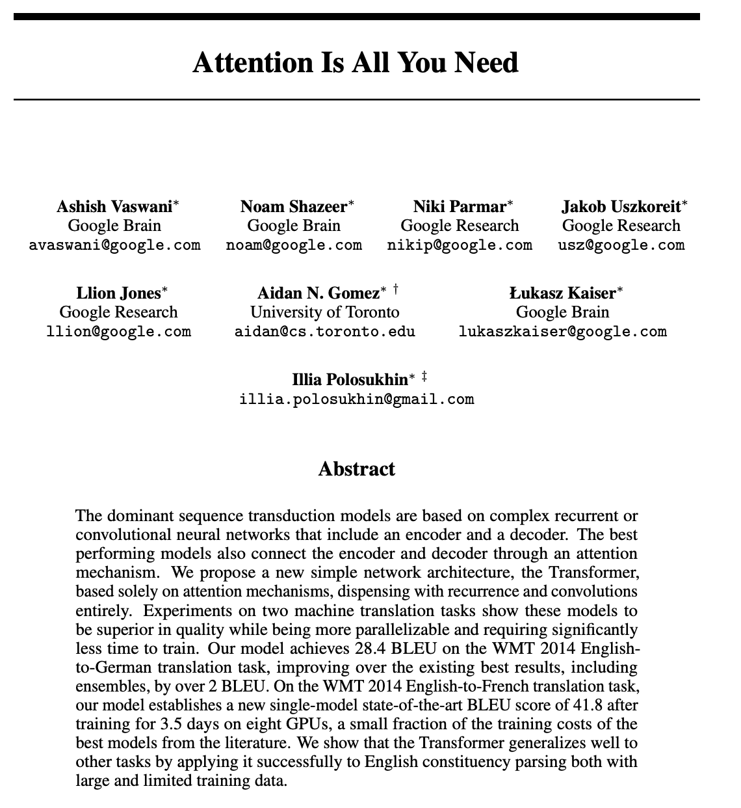

What does the "GPT" in ChatGPT mean?
- Generative: It produces new text.
-
Pre-trained: As opposed to you doing the training process
yourself.
-
Transformer: This was the next major breakthrough leading
to what we have today. It is another piece of math.
-
Before the transformer architecture was introduced (2017) language
models existed but were not nearly as good their modern
counterparts.
-
The transformer lends itself very well to
parallel processing, vastly decreasing model training time.

https://arxiv.org/pdf/1706.03762